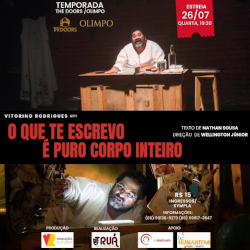

Próximos Eventos
The Doors/Olimpo - O espetáculo O QUE TE ESCREVO É PURO CORPO INTEIRO estará em temporada, com estreia dia 26/07 e em todas as quartas-feiras de agosto. 🎭
O que te escrevo é puro corpo inteiro
✅O espetáculo acaba de chegar do Rio de Janeiro onde realizou exitosa temporada no Teatro Dulcina-RJ durante todos os finais de semana do mês de maio após ser selecionado, através de Edital de Chamamento de Ocupação promovido pela Funarte/RJ.
✅Vem acumulando prêmios de Melhor Ator (Vitorino Rodrigues), Melhor Espetáculo, Melhor Iluminação (Wellington Júnior), Melhor Cenário (Reinaldo Patrício), Melhor Texto (Nathan Sousa) e Melhor Sonoplastia (Edivan Alves).
✅São 3 anos em cartaz, mais de 40 apresentações.
👉🏻Texto de Nathan Sousa
👉🏻direção de Wellington Júnior
👉🏻atuação de Vitorino Rodrigues.
👉🏻Quando? Estreia dia 26 de julho, na Galeria The Doors, às 19h30. E segue em temporada por todas as quartas-feiras do mês de agosto, sempre às 19h30min.
Adquira seu ingresso pelo Sympla no link na bio: https://www.sympla.com.br/evento/o-que-te-escrevo-galeria-the-doors/2051605